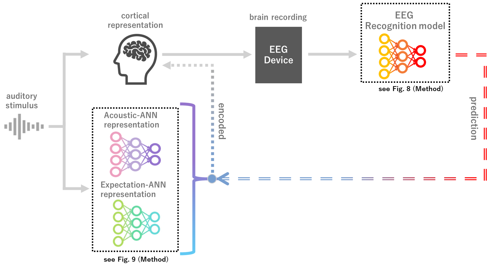
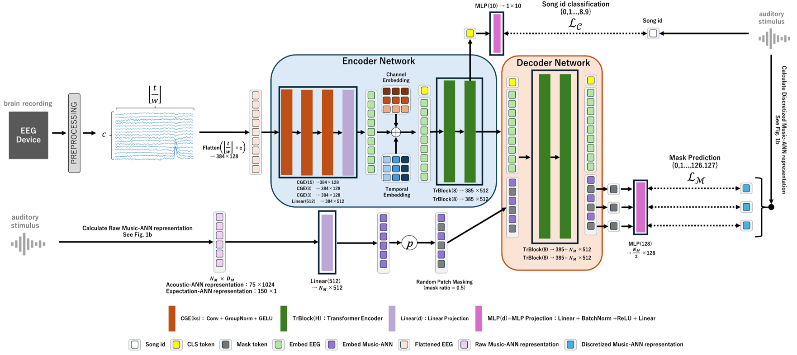
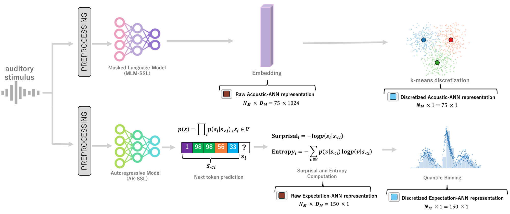
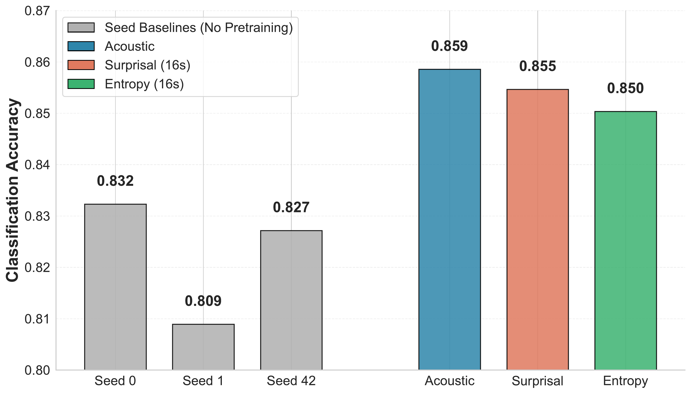
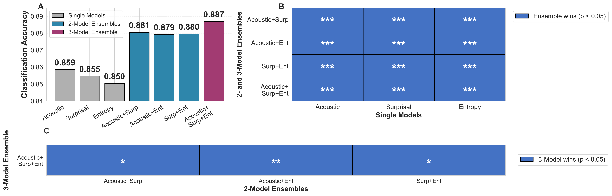
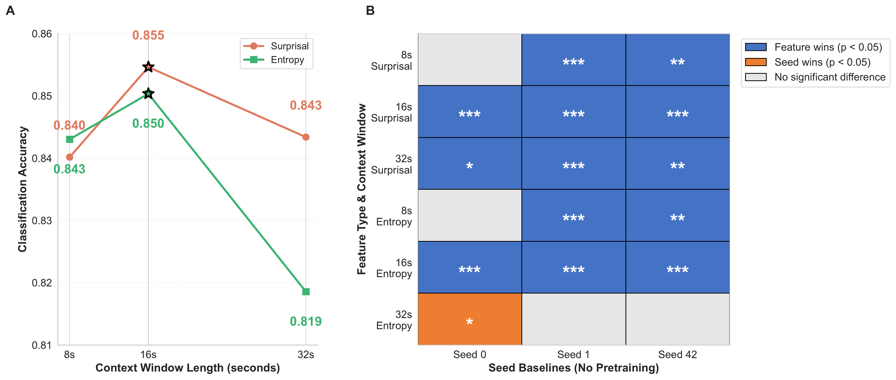
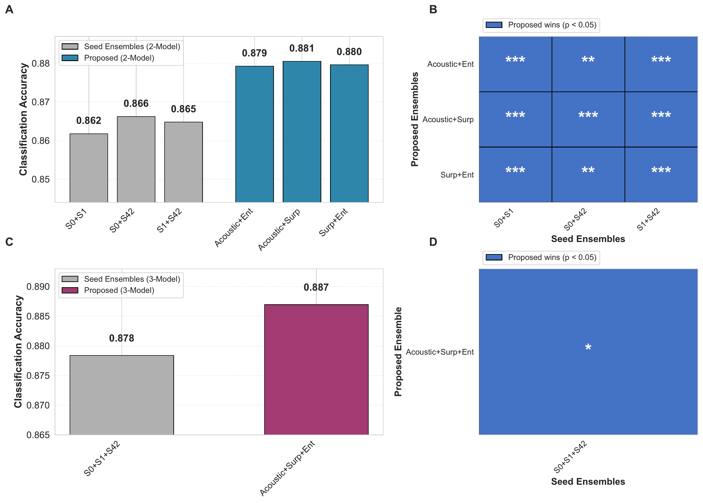

1Sony Computer Science Laboratories, Inc., Tokyo, Japan
*Equal contribution; corresponding author: noguchishogo1@gmail.com aWork conducted while serving as a research assistant
EEG representation learning should be guided by neural encoding.

During music listening, cortical activity encodes both acoustic and expectation-related information. Prior work has shown that ANN representations resemble cortical representations and can serve as supervisory signals for EEG recognition. Here we show that distinguishing acoustic and expectation-related ANN representations as teacher targets improves EEG-based music identification. Models pretrained to predict either representation outperform non-pretrained baselines, and combining them yields complementary gains that exceed strong seed ensembles formed by varying random initializations. These findings show that teacher representation type shapes downstream performance and that representation learning can be guided by neural encoding. This work points toward advances in predictive music cognition and neural decoding. Our expectation representation, computed directly from raw signals without manual labels, reflects predictive structure beyond onset or pitch, enabling investigation of multilayer predictive encoding across diverse stimuli. Its scalability to large, diverse datasets further suggests potential for developing general-purpose EEG models grounded in cortical encoding principles.


Below is a compact summary table (from your manuscript text) and the main result figures.
| Category | Model / Ensemble | Accuracy | Notes |
|---|---|---|---|
| Baseline (Full-scratch) | Seed 0 / 1 / 42 (mean) | 0.823 (0.832 / 0.809 / 0.827) | Transformer EEG encoder trained from scratch. |
| Single model (teacher pretrain) | Acoustic (MuQ) | 0.859 | Best single model. |
| Single model (teacher pretrain) | Surprisal (ctx16) | 0.855 | Expectation-related representation. |
| Single model (teacher pretrain) | Entropy (ctx16) | 0.850 | Expectation-related representation. |
| 2-model ensemble | Acoustic + Surprisal | 0.881 | Probability averaging. |
| 2-model ensemble | Acoustic + Entropy | 0.879 | Probability averaging. |
| 2-model ensemble | Surprisal + Entropy | 0.880 | Probability averaging. |
| 3-model ensemble | Acoustic + Surprisal + Entropy | 0.887 Best | Representation diversity ensemble. |
| Seed ensemble | Seeds 0 + 1 + 42 | 0.878 | Initialization diversity baseline. |




Visualization for Surprisal/Entropy Q128 sequences. The page loads three demo tracks and synchronized
Surprisal/Entropy data (context window of 16 seconds).
Timeline sync is aligned to segment_start_s, with a hard upper bound of 240 sec
(shorter tracks end at their natural duration).
Discretization method: continuous Surprisal and Entropy sequences were pooled across all songs (NMED-T 10 songs + 3 demo tracks), then feature-wise 128-bin equal-frequency quantile binning was applied. Each frame value was converted to a discrete label in the range 0–127 using the resulting bin boundaries.
This section hosts a demo video (demo.py running).
pip install -r requirements.txt pip install -r requirements_demo.txt python demo.py --dataset_dir /path/to/NMED-T_dataset
codes_3s/predann/datasets/preprocessing_eegmusic_dataset_3s.py.
Released checkpoints for finetuning / evaluation (Song ID).
| Model | Target representation | Context | Pretraining | Finetuning | Link |
|---|---|---|---|---|---|
| PredANN++ Entropy | MusicGen Entropy | 16s | 10k epochs (50% masking) | 3.5k epochs | Shogo-Noguchi/PredANNpp-Entropy-ctx16 |
| PredANN++ Surprisal | MusicGen Surprisal | 16s | 10k epochs (50% masking) | 3.5k epochs | Shogo-Noguchi/PredANNpp-Surprisal-ctx16 |
This work uses NMED-T (Naturalistic Music EEG Dataset – Tempo). The repository does not include EEG/audio files. Please download the dataset from Stanford Digital Repository.
NMED-T_dataset/ ├── audio/ │ ├── 21.wav │ ├── 22.wav │ └── ... ├── DS_EEG_pkl/ │ ├── 2_21_1.pkl │ ├── 2_22_1.pkl │ └── ... ├── NoClip_Discreat_K1Surprisal/ ├── Entropy_k1_Q128/ ├── MuQ_Discreat_K128/ ├── surprisal_k1/ ├── MuQ_Continuous_embedding/ └── entropy_k1/
scripts/data_prep/ (see your README).
@misc{noguchi2026expectationacousticneuralnetwork,
title={Expectation and Acoustic Neural Network Representations Enhance Music Identification from Brain Activity},
author={Shogo Noguchi and Taketo Akama and Tai Nakamura and Shun Minamikawa and Natalia Polouliakh},
year={2026},
eprint={2603.03190},
archivePrefix={arXiv},
primaryClass={cs.AI},
url={https://arxiv.org/abs/2603.03190},
}